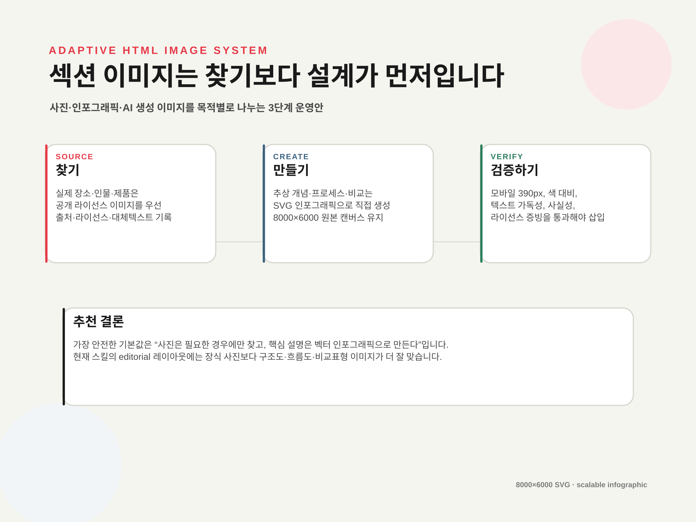
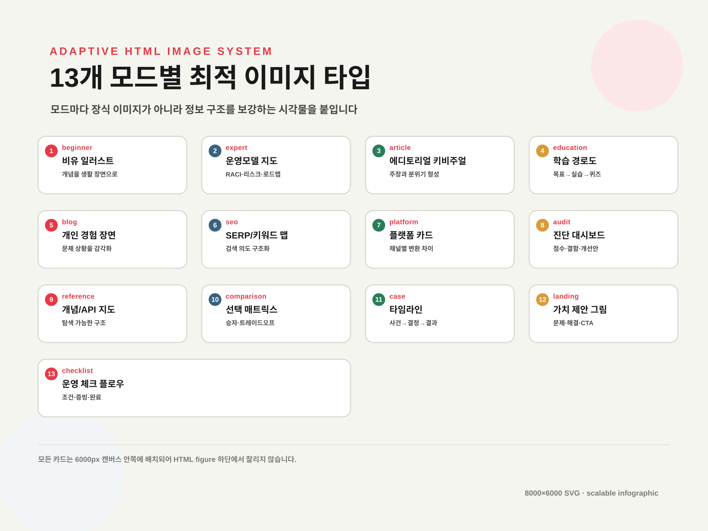
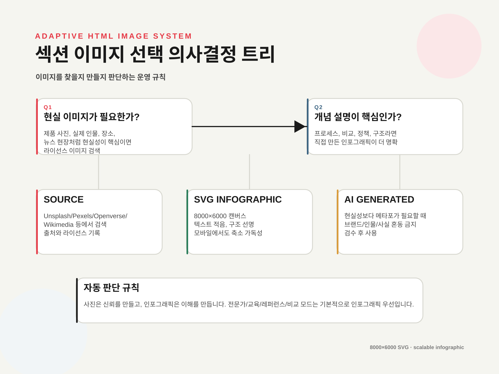
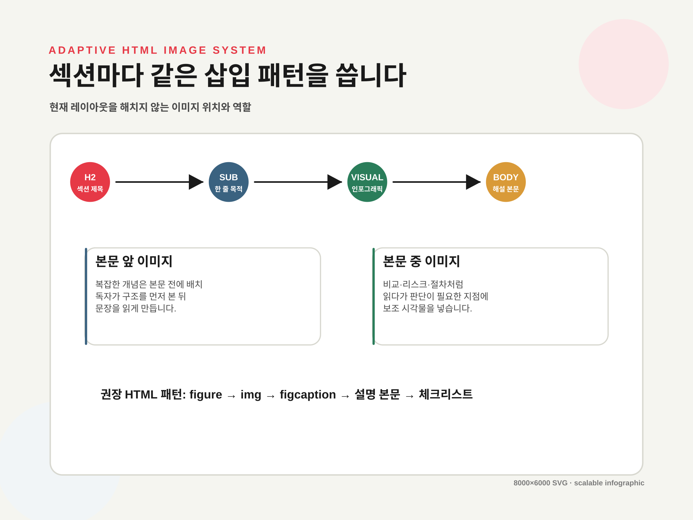
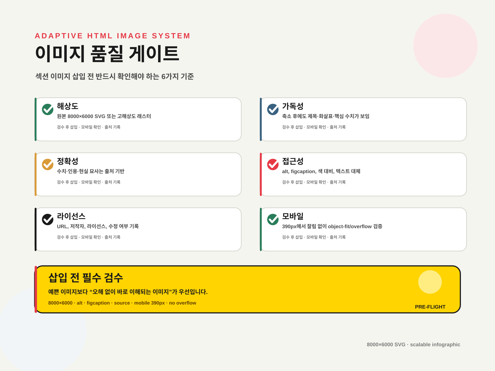

섹션별 이미지 삽입 전략: 찾을 것과 만들 것을 분리하기
현재 레이아웃은 텍스트 구조가 강하므로, 이미지는 장식보다 이해·판단·검증을 돕는 인포그래픽 중심으로 넣는 편이 가장 좋습니다. 이 데모는 8000×6000 SVG 원본 이미지를 실제 HTML 섹션마다 삽입한 예시입니다.

1가장 좋은 방식
현재 스킬 레이아웃에는 “사진 많이 넣기”보다 “설명형 인포그래픽 + 필요한 경우 사진”이 더 잘 맞습니다.
기본값은 SVG 인포그래픽 생성입니다. 전문가 리포트, 교육, 레퍼런스, 비교, 체크리스트처럼 구조 이해가 중요한 모드는 직접 만든 고해상도 벡터 이미지가 가장 안정적입니다. 현실성이 필요한 아티클/블로그/뉴스형 섹션만 라이선스 이미지를 찾고, 추상 개념은 AI 이미지보다 도식화된 인포그래픽으로 처리하는 것이 좋습니다.
찾아 넣기
실제 사람, 장소, 제품, 사건 사진이 필요할 때. 출처와 라이선스 증빙이 필수입니다.
만들어 넣기
절차, 비교, 정책, 리스크, 학습 구조는 SVG 인포그래픽으로 직접 생성합니다.
AI 생성
메타포·컨셉 이미지가 필요하지만 사실 이미지처럼 오해되면 안 되는 경우에만 사용합니다.
213개 모드별 이미지 타입 매핑
모드마다 적합한 시각물은 다릅니다. 같은 예쁜 이미지를 반복하면 정보 구조가 약해집니다.

| 모드 그룹 | 우선 이미지 | 피해야 할 이미지 |
|---|---|---|
| 전문가/감사/비교 | 리스크 맵, RACI, 판단 매트릭스, 로드맵 | 의미 없는 추상 배경, 장식성 사진 |
| 교육/초보자/레퍼런스 | 개념도, 단계도, 예제 흐름, API 구조도 | 텍스트가 많은 스크린샷, 설명 없는 아이콘 |
| 아티클/블로그/랜딩 | 키비주얼, 상황 이미지, 한 장 요약 카드 | 본문 내용과 무관한 스톡 사진 |
| SEO/플랫폼/체크리스트 | 대시보드, 카드 그리드, 발행 체크 플로우 | 출처 없는 뉴스 썸네일, 과도한 UI 모사 |
3찾을지 만들지 결정하는 규칙
이미지를 무조건 검색하지 말고, 섹션의 역할을 기준으로 선택합니다.

EU AI Act, 보안 사고, API 레퍼런스, SEO 대시보드처럼 독자가 판단해야 하는 문서에서는 “멋진 사진”보다 “한눈에 판단 가능한 구조도”가 훨씬 유용합니다.
4섹션 삽입 패턴
현재 레이아웃을 유지하려면 이미지 위치도 규칙화해야 합니다.

1. H2
섹션 목적을 명확히 씁니다.
2. Visual
핵심 구조를 한 장으로 보여줍니다.
3. Caption
이미지가 말하는 결론을 한 문장으로 고정합니다.
4. Body
그림을 근거로 상세 설명합니다.
5품질 게이트
이미지는 예쁜지보다 안전하게 이해되는지가 중요합니다.

뉴스, 규제, 사건, 제품 스크린샷처럼 사실성이 중요한 섹션에는 AI 생성 이미지를 사용하지 않는 편이 안전합니다. 그런 경우에는 공식 이미지, 공개 라이선스 이미지, 직접 만든 도식이 더 적합합니다.
6실제 작업 절차
앞으로 페이지를 만들 때 이 순서로 자동화하면 됩니다.
| 단계 | 작업 | 산출물 |
|---|---|---|
| 1. 섹션 분석 | H2, h2-sub, 핵심 주장, 데이터 유무를 추출 | visual_brief.json |
| 2. 이미지 타입 결정 | photo / infographic / AI concept 중 선택 | visual_plan.md |
| 3. 생성 또는 검색 | SVG 생성, 라이선스 이미지 검색, AI 이미지 생성 | 8000×6000 원본 이미지 |
| 4. 접근성 작성 | alt, figcaption, source-note 작성 | HTML figure 블록 |
| 5. 렌더 검증 | 390px/1280px에서 잘림, 대비, 로딩 확인 | 검수 로그 및 스크린샷 |
최종 추천: “SVG 인포그래픽 우선 + 필요한 경우 라이선스 사진 + 제한적 AI 이미지”
- 전문가/교육/레퍼런스/비교/체크리스트는 8000×6000 SVG 인포그래픽을 기본값으로 둡니다.
- 아티클/블로그/랜딩은 키비주얼이 필요할 때만 사진 또는 AI 컨셉 이미지를 사용합니다.
- 모든 이미지에는 alt, figcaption, 출처/생성 방식, 모바일 검증 결과를 남깁니다.
이 데모의 이미지는 외부 사진을 사용하지 않고 로컬에서 생성한 8000×6000 SVG 인포그래픽입니다. 실제 사진을 사용할 경우 Unsplash/Pexels/Openverse/Wikimedia Commons 등에서 라이선스를 확인하고, 가능하면 출처를 남기는 방식을 권장합니다.